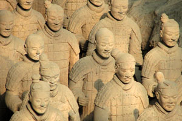
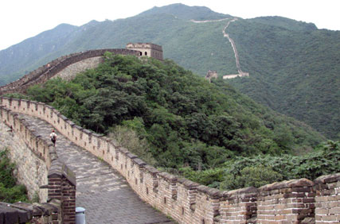

Our next trip to China has now been scheduled with a departure date of May 5 and a return date of May 23. This deluxe tour begins in Shanghai and ends in the beautiful city of Bejjjng. Come join us and enjoy some of China's greatest treasures. In addition to visiting magnificient gardens and temples in several cities, our trip includes three days cruising the Yangtze River through the legendary Three Gorges. The Three Gorges are a sight you will not forget. When the Three Gorges Project is completed, some of these treasures will be covered by water. We will take a short drive to visit the TGP Dam Site along the way.
We will also visit Xian, the home of the tomb of Emperor Qin Shihuangdi and the famous Terra Cotta Warriors. This wonder of the world will certainly be one of the highlights of your tour. Our tour ends in Bejjing, where you will visit Tiananmen Square, the Forbidden city, the Temple of Heaven, and the Great Wall. The Great Wall stretches over 3,700 miles across northern China. It is one of the most recognizable symbols of China.
To provide the finest in personal attention, this tour will be limited to no more than sixteen persons. The price schedule is as follows: Land Tour and Supplemental Group Air, $5,500.00; International Air, $1,350.00; and Single Supplement, $1,000.00. Entrance fees, hotel taxes, and services are included in the Land Tour price. A deposit of $500.00 is required at the time the booking is made. Trip insurance and luggage insurance are optional and are also offered for an extra charge. A passport and visa will be required for entry into China. Call us at 555-848-0807 for further information and the complete itinerary from 8:00 a.m. to 6:00 p.m. (Central Standard Time).